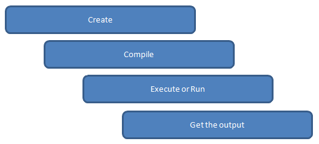

Lots of people get into programming because they love the challenge, are excited by computers and want to build a career creating web sites, mobile apps or desktop programs. But even if you don’t want to become a programmer for a living, it’s still worth your time to learn how to program. I mean this in all seriousness: if computers are at all a part of your life, then learning to program is going to improve your life.
C is a general-purpose high level language that was originally developed by Dennis Ritchie for the Unix operating system. It was first implemented on the Digital Eqquipment Corporation PDP-11 computer in 1972.
The Unix operating system and virtually all Unix applications are written in the C language. C has now become a widely used professional language for various reasons.
- Easy to learn
- Structured language
- It produces efficient programs.
- It can handle low-level activities.
- It can be compiled on a variety of computers.
Facts about C
- C was invented to write an operating system called UNIX.
- C is a successor of B language which was introduced around 1970
- The language was formalized in 1988 by the American National Standard Institue (ANSI).
- By 1973 UNIX OS almost totally written in C.
- Today C is the most widely used System Programming Language.
- Most of the state of the art software have been implemented using C
Why to use C ?
C was initially used for system development work, in particular the programs that make-up the operating system. C was adoped as a system development language because it produces code that runs nearly as fast as code written in assembly language. Some examples of the use of C might be:
- Operating Systems
- Language Compilers
- Assemblers
- Text Editors
- Print Spoolers
- Network Drivers
- Modern Programs
- Data Bases
- Language Interpreters
- Utilities
C Program File
All the C programs are writen into text files with extension ".c" for example hello.c. You can use "vi" editor, "TurboC" editor, etc., to write your C program into a file.
This tutorial assumes that you know how to edit a text file and how to write programming insturctions inside a program file.
C Compilers
When you write any program in C language then to run that program you need to compile that program using a C Compiler which converts your program into a language understandable by a computer. This is called machine language (ie. binary format). So before proceeding, make sure you have C Compiler available at your computer. It comes alongwith all flavors of Unix and Linux.
If you are working over Unix or Linux then you can type gcc -v or cc -v and check the result. You can ask your system administrator or you can take help from anyone to identify an available C Compiler at your computer.
How a C-program works:
Introduction to C
Every full C program begins inside a function called "main". A function is simply a collection of commands that do "something". The main function is always called when the program first executes. From main, we can call other functions, whether they be written by us or by others or use built-in language features. To access the standard functions that comes with your compiler, you need to include a header with the #include directive. What this does is effectively take everything in the header and paste it into your program. Let's look at a working program:
| Sl.No. | Command | Explanation |
|---|---|---|
| 1 | #include <stdio.h> | This is a preprocessor command that includes standard input output header file(stdio.h) from the C library before compiling a C program |
| 2 | int main() | This is the main function from where execution of any C program begins. |
| 3 | { | This indicates the beginning of the main function. |
| 4 | /*_some_comments_*/ | whatever is given inside the command “/* */” in any C program, won’t be considered for compilation and execution. |
| 5 | printf(“Hello_World! “); | printf command prints the output onto the screen. |
| 6 | getch(); | This command waits for any character input from keyboard. |
| 7 | return 0; | This command terminates C program (main function) and returns 0. |
| 8 | } | This indicates the end of the main function. |
Finally, at the end of the program, we return a value from main to the operating system by using the return statement. This return value is important as it can be used to tell the operating system whether our program succeeded or not. A return value of 0 means success.
The final brace closes off the function. You should try compiling this program and running it. You can cut and paste the code into a file, save it as a .c file, and then compile it. If you are using a command-line compiler, such as Borland C++ 5.5, you should read the compiler instructions for information on how to compile. Otherwise compiling and running should be as simple as clicking a button with your mouse (perhaps the "build" or "run" button).
You might start playing around with the printf function and get used to writing simple C programs.